Probabilistic¶
This module contains all relevant functions to generate probabilistic extensions of the models.
API¶
Helper functions when working with Bayesian Neural Networks¶
-
probabilistic.prob_utils.decode_and_sample_diag_gauss(mean, rho, logvar_enc=False, generator=None, is_radial=False)[source]¶ Sample from a Gaussian distribution with diagonal covariance.
The covariance of the distribution is given in an encoded form
 .
This method will assume that the standard deviation can be retrieved via
a softplus operation
.
This method will assume that the standard deviation can be retrieved via
a softplus operation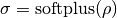
Except if it is assumed that 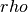 (
rho) encodes the log-variance (parameterlogvar_enc), in which case the standard deviation is retrieved via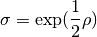
The samples are drawn according to 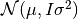, except if
is_radialisTrue, in which case they are sampled according to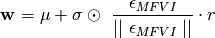
where 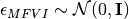, 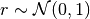, and the norm of 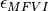 is computed per parameter tensor (e.g., for the weights or the biases of each layer). Also
 is resampled for every parameter tensor.
is resampled for every parameter tensor.When drawing many samples, it might be more efficient to use a combination of functions
decode_diag_gauss()andsample_diag_gauss().- Parameters
mean (list) – List of tensors (
torch.Tensor), that represent the mean of the Gaussian distribution.rho (list) – List of tensors, that represent the encoded variance
.logvar_enc (bool) – Whether the encoded variances
rhorepresent log-variances.generator (torch.Generator, optional) – A generator can be passed to obtain more control over the reproducibility of the random sampling process.
is_radial (bool, optional) – If
True, the weights will be sampled according to a radial distribution, and not a Gaussian one.
- Returns
A sample from the desired distribution, retrieved via the reparametrization trick.
- Return type
(list)
-
probabilistic.prob_utils.decode_diag_gauss(rho, logvar_enc=False, return_var=False, return_logvar=False)[source]¶ Decode the standard deviation for a Gaussian distribution with diagonal covariance.
We consider a Gaussian distribution where the covariance is encoded in
(rho) as real numbers. We can extract the standard deviation from as described in the documentation of
decode_and_sample_diag_gauss().- Parameters
(...) – See docstring of function
decode_and_sample_diag_gauss().return_var (bool, optional) – If
True, the variance will be returned as well.
will be returned as well.return_logvar (bool, optional) – If
True, the log-variance 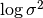 will be returned as well.
- Returns
Tuple containing:
std (list): The standard deviation
 .
.var (list, optional): The variance
. See argument
return_var.logvar (list, optional): The log-variance . See argument
return_logvar.
- Return type
(tuple)
-
probabilistic.prob_utils.extract_mean_std(hnet_outputs, return_logvar=False)[source]¶ Extract mean and standard deviation for a multivariate Gaussian distribution with diagonal covaiance matrix from a hypernetwork that outputs mean and log-variance.
Deprecated since version 1.0: Please use a main network wrapper such as
probabilistic.gauss_mnet_interface.GaussianBNNWrapperor the functiondecode_diag_gauss()rather than working with the hypernet output directly.- Parameters
hnet_outputs – See docstring of method
sample_diag_gaus_weights().return_logvar (optional) – If set, a third value will be returned, corresponding to the log-variance.
- Returns
mean and std.
- Return type
Two lists of tensors
-
probabilistic.prob_utils.kl_diag_gauss_with_standard_gauss(mean, logvar)[source]¶ Compute the KL divergence between an arbitrary diagonal Gaussian distributions and a Gaussian with zero mean and unit variance.
- Parameters
mean – Mean tensors of the distribution (see argument mean of method
sample_diag_gauss()).logvar – Log-variance tensors with the same shapes as the mean tensors.
- Returns
The analytically computed KL divergence between these distributions.
-
probabilistic.prob_utils.kl_diag_gaussians(mean_a, logvar_a, mean_b, logvar_b)[source]¶ Compute the KL divergence between 2 diagonal Gaussian distributions.

- Parameters
mean_a – Mean tensors of the first distribution (see argument mean of method
sample_diag_gauss()).logvar_a – Log-variance tensors with the same shapes as the mean_a tensors.
mean_b – Same as mean_a for second distribution.
logvar_b – Same as logvar_a for second distribution.
- Returns
The analytically computed KL divergence between these distributions.
-
probabilistic.prob_utils.kl_radial_bnn_with_diag_gauss(mean_a, std_a, mean_b, std_b, ce_sample_size=10, generator=None)[source]¶ Compute the KL divergence between one radial BNN distribution and one diagonal Gaussian distribution.
For a radial BNN distribution 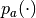 and a Gaussian distribution 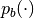, the expression is given by
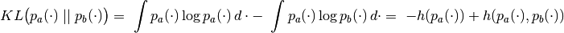
where 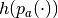 denotes the entropy of and 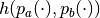 the cross-entropy between and .
Entropy
Since is a radial BNN distribution its entropy can be computed analytically according to
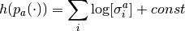
as described in Eq.5 from Farquhar et al., where
 is
a sum over the weights.
is
a sum over the weights.Cross-entropy
The cross-entropy term can be estimated taking
 Monte-Carlo samples
from and averaging their log-probability under
.
Monte-Carlo samples
from and averaging their log-probability under
.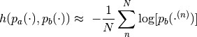
- Parameters
mean_a – Mean tensors of the radial BNN distribution (see argument mean of method
sample_diag_gauss()).std_a – The standard deviation
with the same shapes as the
mean_a tensors.mean_b – Same as mean_a for diagonal Gaussian distribution.
std_b – Same as std_a for diagonal Gaussian distribution.
ce_sample_size (int, optional) – The number of weight samples to draw to estimate the cross-entropy term of the KL.
generator (torch.Generator, optional) – A generator can be passed to obtain more control over the reproducibility of the random sampling process.
- Returns
The computed KL divergence between these distributions.
-
probabilistic.prob_utils.sample_diag_gaus_from_hnet(hnet_outputs)[source]¶ This method uses the reparametrization trick to sample a set of main network weights assuming the output of the hypernetwork represents the mean and log-variances of a diagonal Gaussian distribution.
When drawing many samples, it might be more efficient to use a combination of methods
extract_mean_std()andsample_diag_gauss().Deprecated since version 1.0: Please use a main network wrapper such as
probabilistic.gauss_mnet_interface.GaussianBNNWrapperor the functiondecode_and_sample_diag_gauss()rather than working with the hypernet output directly.- Parameters
hnet_outputs – A list of tensors. The first half of this list is interpreted as mean values and the second half as log variance values.
- Returns
A sample of the distribution represented by the hypernet output.
-
probabilistic.prob_utils.sample_diag_gauss(mean, std, generator=None, is_radial=False)[source]¶ Get a sample from a multivariate Gaussian distribution with diagonal covariance matrix.
Samples are produced using the reparametrization trick.
Note
If
is_radialis set toTrue, samples will instead by obtained from a radial BNN distribution instead of a multivariate Gaussian. For details refer to docstring ofdecode_and_sample_diag_gauss().- Parameters
mean – A list of tensors. See return value of method
extract_mean_std().std – A list of tensors with the same shapes as mean. See return value of method
extract_mean_std().generator (torch.Generator, optional) – A generator can be passed to obtain more control over the reproducibility of the random sampling process.
is_radial (bool, optional) – If
True, the weights will be sampled according to a radial distribution, and not a Gaussian one.
- Returns
A list of tensors, where each is a sample from the diagonal Gaussian distributions defined by entries of mean and std.
-
probabilistic.prob_utils.square_wasserstein_2(mean_a, logvar_a, mean_b, logvar_b)[source]¶ Compute the square of the Wasserstein-2 distance between 2 diagonal Gaussian distributions.
- Parameters
mean_a – Mean tensors of the first distribution (see argument mean of method
sample_diag_gauss()).logvar_a – Log-variance tensors with the same shapes as the mean_a tensors.
mean_b – Same as mean_a for second distribution.
logvar_b – Same as logvar_a for second distribution.
- Returns
The analytically computed square of the Wasserstein distance between these distributions.